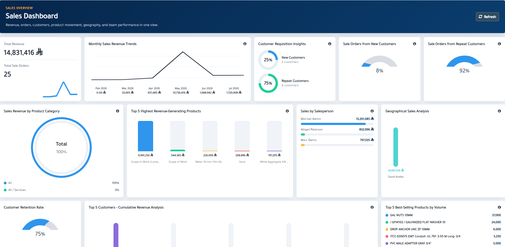
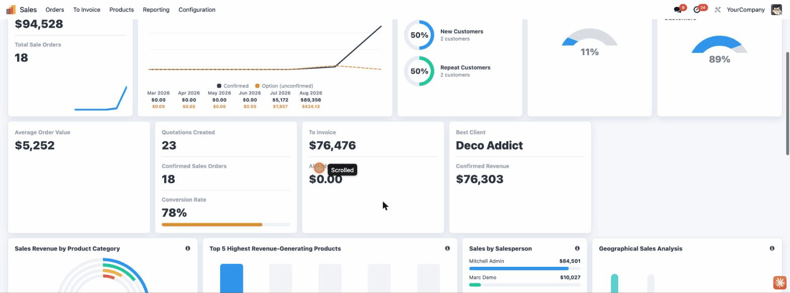
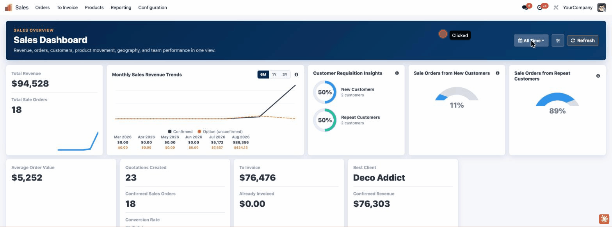
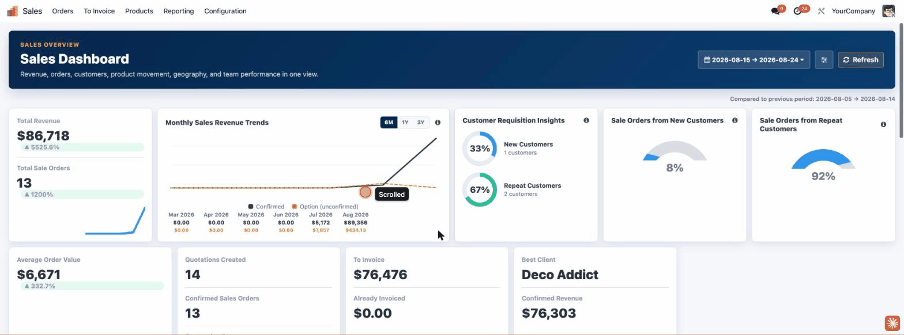
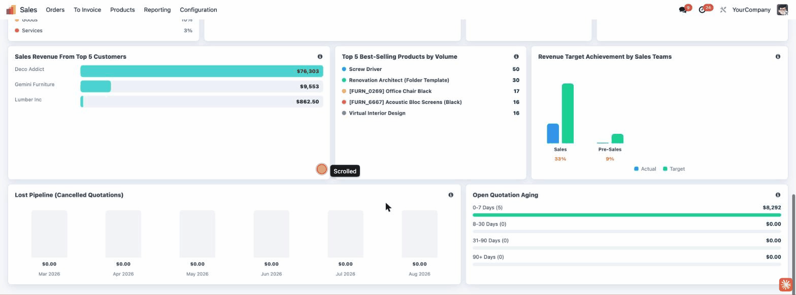

Advanced Sales Dashboard provides management teams with a clear and interactive overview of revenue, orders, customers, products, salespeople, geography, pipeline performance and monthly trends. Apply date and company filters, review critical KPIs and open the corresponding standard Odoo records directly from the dashboard.
Monitor revenue, orders, customers, average order value and other essential sales indicators.
Review revenue movement, monthly performance and sales trends through clear visual charts.
Compare customer, product, sales-team and salesperson performance from one screen.
Enjoy a fast, modern and responsive dashboard experience built using Odoo OWL.
View critical sales information without navigating through multiple reports, menus or spreadsheet exports.
Track total revenue, confirmed orders, customers and average order values.
Analyze sales movement across the selected date range using visual trend charts.
Understand opportunity distribution and pipeline value across sales stages.
Identify customers generating the highest sales value during the selected period.
Review the products contributing the most to overall sales performance.
Compare individual salespeople by revenue, orders and overall contribution.
Analyze sales distribution by customer country and geographic market.
Compare monthly results and identify growth or decline patterns.
See revenue still to invoice versus revenue already invoiced at a glance.
Track cancelled-quotation revenue over time to spot where deals are falling through.
Bucket open quotations by age (0-7 / 8-30 / 31-90 / 90+ days) to catch stalled deals early.
A closer look at the dashboard's KPIs, filters and analytics cards.

Dashboard overview

Date-range filter

Period-over-period comparison

Lost pipeline & quotation aging
Dashboard values are not limited to visual reporting. Clicking supported KPI cards and analytics elements opens the corresponding standard Odoo records, allowing users to immediately investigate the underlying transactions.
Developed using Odoo's modern OWL framework and standard Odoo models, actions and views. The module does not require another custom module or an external Python package.
Give your sales managers and executives a faster and clearer way to understand Odoo sales performance from one interactive dashboard.